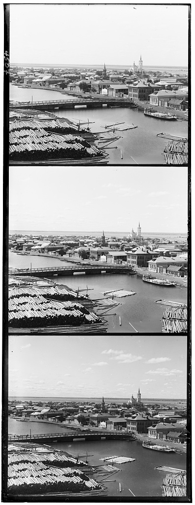

CS 180: Computer Vision and Computational Photography
Project Overview
Sergei Mikhailovich Prokudin-Gorskii was a Russian photographer who pioneered color photography in the early 20th century. He took
thousands of color pictures, each a series of three exposures of a scene onto a glass plate using red, green, and blue filters.
Each of these plates have been digitized as a single image containing the different plates aligned vertically on each other, with
the blue plate on top, the green plate in the middle, and the red plate on the bottom.
The goal of this project is to take the digitized versions of those glass plates and to employ image processing techniques to align
the plates to produce a full color photograph with as few artifacts as possible.
Three-plate image of the town of TobolskThree-plate image of the town of a CathedralThree-plate image of the town of a Monastery
Algorithm
There are two key algorithms used for colorization. The first one being the Exhaustive Alignment Process, used for smaller jpg
images, and the second one being the Coarse-to-Fine Image Pyramid Strategy, used for tif larger images. Both of these involve separating
the three plates in each image and using some procedure to align them correctly.
Exhaustive Alignment
This algorithm involved exhaustively searching over a window of possible displacements ([-15,15] pixels) to align the red and green color plates
over the blue color plate, score each one using some image matching metric, and take the displacement with the best score. The one used here was the L2 norm also
known as the Euclidean Distance or Sum of Squared Distances (SSD).
Coarse-to-Fine Image Pyramid
As the images become larger, exhaustive alignment becomes time-consuming. The alternative was to use the image pyramid approach. This involves the following steps: Downsized versions
of the color plates are created. At the smallest scale, the exhaustive search process is repeated over the same displacement window noting down
the displacement vector for the red and green color plates. As we proceed down the pyramid to the larger scaled images, we reduce the search space as we
start searching from the scaled up displacement vector from the previous scale instead of searching from scratch!
For an estimate of the downscaling the process, the most scaled down image was roughly 200x240 pixels. At the smallest scale (top of the pyramid), the
search space was [-18, 18], same as the exhaustive alignment. At every other scale, the search space was [-1, 1]. This ensures that the bulk of the alignment,
shifting and checking happens at a very small scale, where image shifting and euclidean distance calculation is inexpensive.
Results
Here is a gallery of colorized images after applying the Exhaustive Alignment and Coarse-to-fine image pyramid algorithms.
The idea of using gradients stems from the fact that it would be clever to use better features for aligning images instead of using raw pixel values.
In some cases, when raw pixel values might communicate something inconducive for alignment, for eg. differing brightness, it is prudent to use
a feature like gradient maps for alignment instead.
In computer vision, a gradient map is a representation of the rate of change in intensity at each pixel of an image. It is used to highlight the edges or transitions between different regions of the image. When you apply the Sobel filter (such as with filters.sobel in Python's image processing libraries like skimage), you are calculating the image gradient.
Specifically, the Sobel filter computes the first derivative of the image intensity in both the horizontal and vertical directions. It outputs a gradient map that emphasizes edges by measuring the magnitude of intensity changes in these two directions:
Horizontal gradient: Captures changes in intensity along the x-axis.
Vertical gradient: Captures changes in intensity along the y-axis.
The gradient map returned by filters.sobel typically combines these gradients to produce a single image, where each pixel represents the magnitude of the gradient at that location. Higher values in this map correspond to stronger edges or boundaries, while lower values indicate smoother or more uniform regions.
In formula form, for each pixel (x, y):
Gradient Magnitude = √((Gx)² + (Gy)²)
Where Gx and Gy are the gradients in the x and y directions, respectively.
The use of Gradient Maps improved the quality of church.tif significantly while minimally improving other images.
Gradient Map of church.tifImage Alignment without using Gradient MapImage Alignment after using Gradient Map